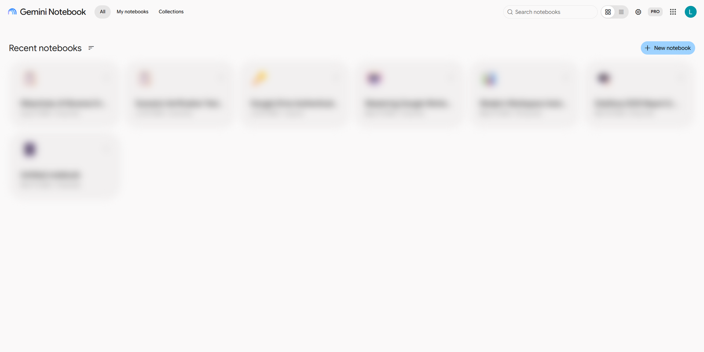
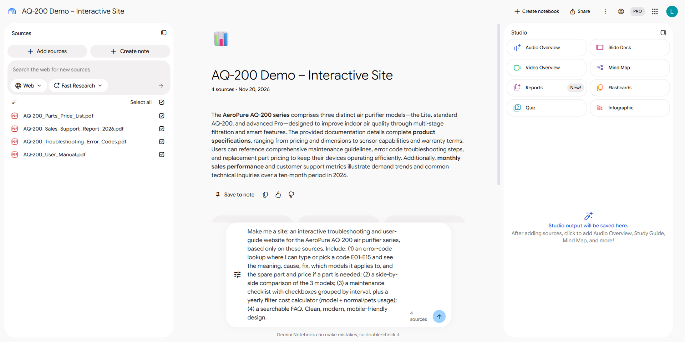
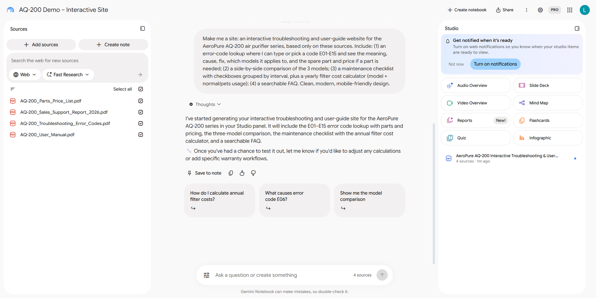
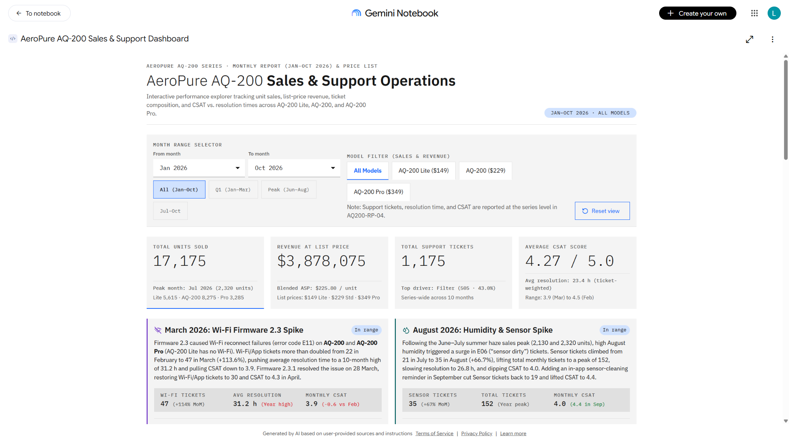
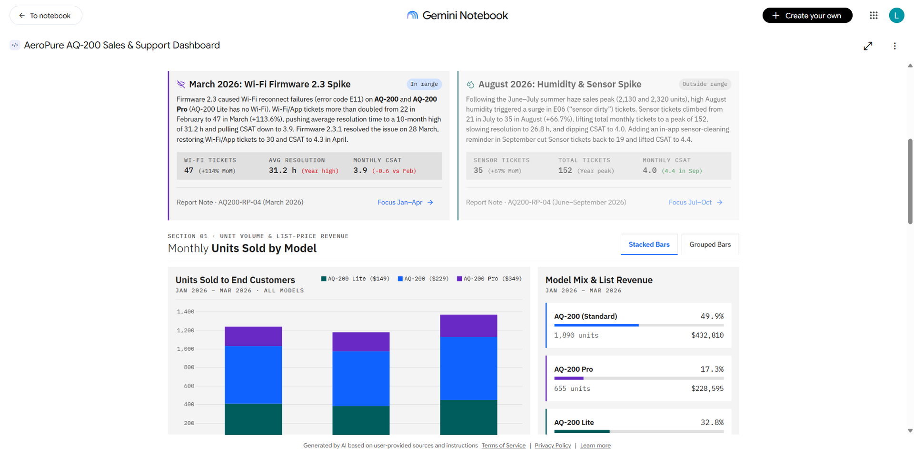

1. "Make me a site" là gì — và góc tiếp cận của bài này
Gemini Notebook (notebook.google.com) cho phép thêm nguồn rồi gõ make me a site ... trong ô chat. Thay vì trả lời bằng đoạn văn, Notebook sinh ra một web app HTML/JS hoàn chỉnh, lưu thành một mục trong panel Studio, mở được ở tab riêng và chia sẻ được.
Đã có bài viết khác dùng tính năng này để làm dashboard marketing. Bài này đi theo hướng khác, gần với công việc của một công ty phần mềm hơn: biến manual sản phẩm / tài liệu kỹ thuật thành công cụ tương tác (tra mã lỗi, checklist bảo trì, tính chi phí), rồi đo một cách khách quan xem cách làm này khác gì so với cách quen thuộc mà team dev vẫn hay dựng: một pipeline RAG truyền thống (chunk → embedding → retrieve → LLM trả lời).
2. Chuẩn bị nguồn: bộ manual hư cấu 4 PDF
Mình viết một file Python (demo-assets/sources-gen/product_data.py) chứa toàn bộ dữ liệu sản phẩm làm "nguồn sự thật", rồi make_sources.py sinh ra cả bản Markdown lẫn PDF. Nhờ vậy mọi đáp án đúng (ground truth) đều tính lại được bằng code, không phải đoán.
| File | Nội dung | Dùng để test |
|---|---|---|
AQ-200_User_Manual.pdf | Bảng thông số 3 model (Lite / AQ-200 / Pro), setup 7 bước, bảng nút bấm, lịch bảo trì, 9 FAQ | Tra cứu, so sánh model |
AQ-200_Troubleshooting_Error_Codes.pdf | 15 mã lỗi E01–E15: ý nghĩa, nguyên nhân, cách sửa, model áp dụng | Tra mã lỗi |
AQ-200_Parts_Price_List.pdf | 12 linh kiện + phí dịch vụ (USD, hư cấu) | Câu hỏi nhiều bước (lỗi → linh kiện → giá) |
AQ-200_Sales_Support_Report_2026.pdf | Doanh số theo tháng (T1–T10/2026) theo model, ticket hỗ trợ theo nhóm, thời gian xử lý, CSAT, ghi chú sự cố | Dashboard, câu hỏi tính toán |
3. Từng bước tạo site trong Gemini Notebook
Tất cả thao tác dưới đây làm trên Chrome thật (tài khoản Gemini Notebook PRO), ngày 20/11/2026. Tên nút ghi đúng như trên UI.
Vào https://notebook.google.com/ → bấm + New notebook. (Danh sách notebook cá nhân đã được làm mờ.)

Notebook mới tên "Untitled notebook" → click vào tiêu đề, đổi thành AQ-200 Demo – Interactive Site. Bấm + Add sources; hộp thoại có các lựa chọn Upload files, Websites, Play Books, Drive, Textbooks, Copied text.

Chọn Upload files → chọn 4 PDF. Đo được: ~8,5 giây để cả 4 nguồn hiện trong panel Sources; Notebook tự viết tóm tắt nguồn ngay sau đó.

Gõ prompt vào ô "Ask a question or create something":

Chat trả lời gần như ngay: "I've started generating your interactive troubleshooting and user-guide site … in your Studio panel". Bên phải, Studio hiện thẻ "Generating Site… / based on 4 sources". Thời gian đo được: thẻ vẫn đang chạy ở giây 182 và đã xong ở giây 212 → khoảng 3–3,5 phút.

Click thẻ trong Studio → site mở trong khung xem, có các nút Open in new tab, Collapse, More options (⋮), Close, và View 4 sources, Good content / Bad content.

Bấm Open in new tab: site chạy ở URL riêng …/notebook/<id>/artifact/<id>, thanh trên có To notebook và Create your own; nội dung chạy trong iframe sandbox (domain *.usercontent.goog), cuối trang ghi "Generated by AI based on user-provided sources and instructions".

Mình đã thử gì trên site A


| Kiểm tra | Kết quả trên site | Đối chiếu nguồn |
|---|---|---|
| Tra E02 | Nguyên nhân ~2.160 h; FL-200H $39, FL-200H-2 $70, FL-200P $59; giữ Filter Reset 3 s | ✅ Đúng, còn tự nối mã lỗi → bảng giá (2 tài liệu khác nhau) |
| Tra E03 | Túi nilon chưa gỡ, xuất hiện trong 30 phút đầu, 3 bước sửa | ✅ Đúng (phần "No replacement parts required" bị lặp 2 dòng — lỗi trình bày nhỏ) |
| Máy tính: AQ-200 Pro + nuôi thú cưng | 3 lọc/năm × $59 = $177/năm; tick UV-C → +$35 | ✅ Đúng (thay 4 tháng/lần, FL-200P $59, UV-200 $35) |
| Máy tính: AQ-200 Lite, dùng bình thường | $70/năm (tự đề xuất gói 2 lọc FL-200H-2, tiết kiệm $8) | ✅ Đúng, và "thông minh" hơn yêu cầu |
| Bảng so sánh 3 model | Đủ 15 dòng thông số + nút "Highlight differences only" | ✅ Khớp bảng thông số |
| FAQ | 15 câu (nguồn có 9) — 6 câu thêm được "dịch" từ phần setup/troubleshooting | 🟡 Nội dung có trong nguồn, nhưng không còn là FAQ gốc — cần biết khi dùng làm tài liệu chính thức |
4. Site thứ 2: dashboard bán hàng & ticket hỗ trợ
Chat xác nhận sau 16,8 s; site xong trong ≤ 157 s (~2,5 phút) kể từ lúc gửi prompt. Trong lúc chờ mình vẫn hỏi chat bình thường — việc tạo site chạy nền, không chặn chat.


| KPI trên dashboard | Dashboard hiển thị | Tính lại bằng Python |
|---|---|---|
| Tổng units T1–T10 | 17,175 | 17,175 ✅ |
| Doanh thu theo giá niêm yết | $3,878,075 | $3,878,075 ✅ |
| Tổng ticket / nhóm lớn nhất | 1,175 / Filter 505 | 1,175 / 505 ✅ |
| Units Q1 (sau khi lọc) | 3,790 | 3,790 ✅ |
| CSAT trung bình | 4.27 | 4.29 (trung bình đơn) — dashboard dùng trung bình có trọng số theo ticket 🟡 |
| Callout tháng 3 / tháng 8 | Wi-Fi 22→47 (+113.6%), Sensor 21→35 (+66.7%) | ✅ Đúng số và đúng lý do trong ghi chú |
5. Dựng RAG truyền thống trên cùng tài liệu
Để so sánh công bằng, mình viết một pipeline RAG tối giản (~200 dòng, demo-assets/rag/rag.py) trên đúng 4 PDF:
- Extract:
pypdflấy text từng trang. - Chunk: gom dòng thành chunk ~900 ký tự, chồng 2 dòng → 17 chunk.
- Embed:
gemini-embedding-2(3072 chiều, 4,430 token). Lưu ý thực tế: model này là multimodal và gộp một list nội dung thành 1 vector, nên phải gọi embed từng chunk riêng — lần đầu mình gửi theo batch và chỉ nhận về 1 vector. - Retrieve: cosine similarity, top-5.
- Answer:
gemini-3.5-flash-lite, temperature 0, bắt buộc trích[S#], không có thì trả "Not found in the documents."
Đo được: build index 10,1 s (extract + chunk 0,04 s, embed 10 s). Mỗi câu hỏi 5,1–7,0 s. Tổng chi phí 10 câu: $0.0062 (16,553 token vào / 497 token ra, giá flash-lite $0.30/$2.50 mỗi 1M token; chưa tính phí embedding cho 4,430 token).
6. Kết quả đo: 10 câu hỏi
10 câu gồm: tra cứu, nhiều bước (nối 2 tài liệu), tính tổng trên bảng doanh số, và 1 câu không có trong tài liệu (AQ-300) để thử hallucination. Cùng câu hỏi tiếng Anh gửi cho RAG (script) và chat Notebook (cùng notebook đã tạo site). Chấm tay theo dữ liệu gốc.
| # | Loại | Đáp án đúng | RAG truyền thống | Notebook chat |
|---|---|---|---|---|
| Q1 | Tra mã lỗi E03 | Túi nilon chưa gỡ → gỡ, lắp lại | ❌ "Not found" (bảng PDF bị tách dòng, chunk có "E03" nhưng mất phần cách sửa) | ✅ |
| Q2 | CADR + diện tích Pro | 450 m³/h; 38–55 m² | ✅ | ✅ |
| Q3 | E02 trên Lite → linh kiện, giá, thao tác | FL-200H $39; giữ Filter Reset 3 s | ✅ | ✅ (+ gợi ý gói 2 lọc) |
| Q4 | Pro + 2 con mèo: chi phí/năm | 3×$59 + $35 = $212 | ❌ "Not found" (không retrieve đủ 2 chunk) | ✅ $212 |
| Q5 | Tổng units Q1 | 3,790 | ✅ 3,790 | ❌ 3,490 (cộng sai) |
| Q6 | Tháng nhiều ticket Wi-Fi nhất + lý do | T3, 47, firmware 2.3 | ✅ | ✅ |
| Q7 | Doanh thu Pro T1–T10 (nối 2 file) | 3,285 × $349 = $1,146,465 | ❌ "Not found" (không lấy được chunk giá) | ✅ |
| Q8 | Mã lỗi chỉ có trên Pro | E08, E13 | ✅ | ✅ |
| Q9 | Dùng trong phòng tắm? | Không (độ ẩm >80%) | ❌ "Not found" (chunk an toàn không lọt top-5) | ✅ |
| Q10 | Giá & ngày ra mắt AQ-300 (không có) | Từ chối | ✅ Từ chối | ✅ Từ chối, nói rõ nguồn chỉ có AQ-200 |
| Chỉ số | RAG truyền thống | Notebook chat | Notebook site (A + B) |
|---|---|---|---|
| Đúng / 10 | 6 | 9 | Mọi mục mình kiểm tra đều đúng (xem mục 3, 4) |
| Bịa / sai số liệu | 0 | 1 (cộng sai Q5) | 0 (1 chỗ dùng trung bình có trọng số) |
| Từ chối nhầm | 4 | 0 | — |
| Trích nguồn | Có, [S#] + file/trang | Có, số tham chiếu bấm được | Có nút "View 4 sources", không trích từng ô |
| Thời gian trả lời | 5,1–7,0 s (trung vị ~5,7 s) | 8,7–13,8 s (trung vị 10,7 s) | Tức thì sau khi đã tạo (tạo mất ~2,5–3,5 phút) |
| Chi phí đo được | $0.0062 / 10 câu | Nằm trong gói PRO, không thấy token | Nằm trong gói PRO |
Đọc kết quả cho đúng: RAG của mình là bản tối giản (chunk theo ký tự, top-5, model rẻ nhất, prompt rất khắt khe). Nó "an toàn" (không bịa) nhưng hay bỏ cuộc. Muốn đạt mức của Notebook cần thêm việc: parse bảng đúng cấu trúc, chunk theo hàng/mã lỗi, hybrid search (BM25 + vector), rerank, tăng k… Đó chính là chi phí ẩn của RAG tự dựng.
7. Notebook interactive site vs RAG truyền thống
| Tiêu chí | Gemini Notebook – interactive site | RAG truyền thống (tự dựng) |
|---|---|---|
| Dạng đầu ra | Web app hoàn chỉnh: tra cứu, bộ lọc, biểu đồ, checklist, máy tính chi phí. Người dùng tự khám phá, không cần biết hỏi gì. | Câu trả lời text cho từng câu hỏi. Người dùng phải biết đặt câu hỏi. |
| Độ chính xác / hallucination | Dữ liệu được "đóng băng" vào trang lúc tạo; phép tính do JS làm nên ổn định (Q1 3,790 đúng). Rủi ro: diễn giải/thêm nội dung (FAQ 9 → 15 câu), chọn công thức (CSAT có trọng số) — phải review một lần. | Phụ thuộc chất lượng retrieve. Bản tối giản: 0 bịa nhưng 4/10 từ chối nhầm. Phép tính do LLM làm mỗi lần hỏi. |
| Thời gian dựng | ~1 phút thao tác + 2,5–3,5 phút chờ. Không code. | Index chỉ 10 s, nhưng viết + debug pipeline mất vài giờ; làm "tốt" (parse bảng, rerank, UI) mất nhiều ngày. |
| Chia sẻ | Open in new tab / Share theo tài khoản Google. Người xem dùng trên trình duyệt, không cần server. | Phải tự host (API + UI), tự làm auth. |
| Cập nhật khi tài liệu đổi | Site là ảnh chụp tại thời điểm tạo; tài liệu đổi → phải prompt tạo lại (ra artifact mới, layout có thể khác). | Chạy lại build (10 s) là câu trả lời mới; UI giữ nguyên. Hợp với tài liệu thay đổi liên tục. |
| Chi phí | Nằm trong gói Gemini Notebook (PRO); không thấy được token/chi phí từng lần. | Trả theo token, minh bạch: $0.0062 cho 10 câu với flash-lite. |
| Kiểm soát dữ liệu | Tài liệu và site nằm trên Google (theo điều khoản của tài khoản); không chọn được model, không chạy on-prem. | Toàn quyền: chọn model, chọn nơi lưu index, log, có thể chạy model local cho dữ liệu nhạy cảm. |
| Tích hợp | Trang độc lập; không có API để nhúng vào sản phẩm của mình. | Là code → nhúng vào app, chatbot, CI, Slack… |
| Phù hợp nhất cho | Tài liệu tương đối ổn định, cần một "công cụ" để người khác tự dùng: hướng dẫn sử dụng, tra mã lỗi, dashboard một lần, demo cho khách, onboarding. | Kho tài liệu lớn, thay đổi thường xuyên, câu hỏi mở không đoán trước, cần tích hợp vào hệ thống và kiểm soát dữ liệu. |
8. Ý kiến cá nhân
1. Đây không phải "RAG tốt hơn", mà là một dạng đầu ra khác. RAG trả lời câu hỏi; interactive site trả lời nhu cầu. Từ cùng 4 PDF, Notebook tự hiểu rằng một bảng mã lỗi nên thành ô tìm kiếm, lịch bảo trì nên thành checklist, bảng giá + chu kỳ thay lọc nên thành máy tính chi phí. Mình không phải thiết kế UI — điều mà RAG không bao giờ làm.
2. "Đóng băng dữ liệu vào code" là điểm mạnh bị đánh giá thấp. Chat Notebook cộng sai 3,790 thành 3,490, còn dashboard của chính nó tính đúng. Khi cần con số cho khách, mình sẽ tin trang tương tác (đã review một lần) hơn câu trả lời chat sinh lại mỗi lần.
3. Nhưng site là ảnh chụp, không phải hệ thống. Không có API, không tự cập nhật, mỗi lần tạo lại có thể ra layout khác. Với tài liệu sống (spec đang đổi hằng tuần) thì RAG/hệ thống thật vẫn cần.
4. Vẫn phải review. Site tự "làm giàu" nội dung (FAQ 9 → 15, gợi ý gói 2 lọc). Phần lớn có cơ sở trong nguồn, nhưng nếu dùng làm tài liệu chính thức thì cần một vòng kiểm tra như với code do AI viết.
5. RAG tối giản dễ làm, RAG tốt thì không. Bản 200 dòng của mình bị đánh gục bởi chính bảng trong PDF. Notebook xử lý PDF bảng tốt hơn hẳn ngay từ đầu — đó là phần "khó" mà người dùng không phải thấy.
9. Áp dụng vào công việc hằng ngày của mình
Công việc của mình ở công ty phần mềm: viết blog kỹ thuật, viết proposal, làm demo cho khách, đọc manual/spec và tài liệu khách gửi. Cụ thể mình sẽ dùng như sau:
| Việc | Cách dùng interactive site | Lợi ích kỳ vọng |
|---|---|---|
| Proposal / báo giá | Từ bảng ước lượng effort + đơn giá (bản đã ẩn danh) tạo một "estimate explorer": chọn module, thấy man-day và chi phí thay đổi. Gửi link kèm proposal. | Khách tự thử phương án; giảm vòng email hỏi "nếu bỏ module X thì sao". |
| Demo pre-sales | Trước buổi gặp, đưa tài liệu public của sản phẩm khách (manual, brochure) vào Notebook → tạo prototype trang tra cứu/hỗ trợ trong 5 phút để minh hoạ ý tưởng. | Có thứ "bấm được" để thảo luận thay vì slide tĩnh. |
| Blog kỹ thuật | Từ dữ liệu benchmark của bài (như bảng kết quả trong bài này) tạo dashboard nhỏ đi kèm bài viết. | Người đọc tự lọc theo model/tiêu chí. |
| Đọc spec / manual dài | Biến spec API hoặc manual thiết bị thành trang tra cứu (mã lỗi, endpoint, tham số) cho team dev dùng trong dự án. | Onboarding thành viên mới nhanh hơn đọc PDF 80 trang. |
| Quyết định khi nào dựng RAG | Dùng kết quả bài này làm tiêu chí: tài liệu ổn định + cần công cụ cho người dùng → Notebook site; tài liệu sống + cần tích hợp/kiểm soát dữ liệu → RAG. | Tránh dựng RAG cho việc chỉ cần một trang tra cứu. |
10. Video demo
Video demo đầy đủ:videos/full-demo.mp4 (sẽ chèn sau)